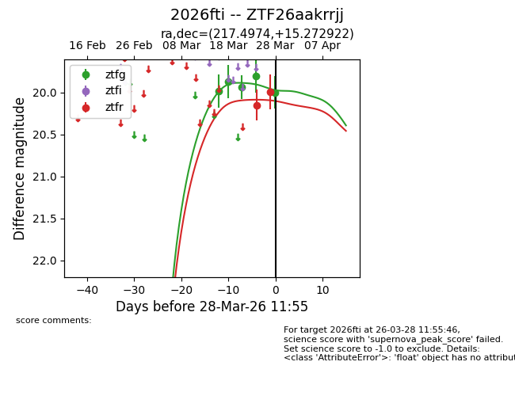
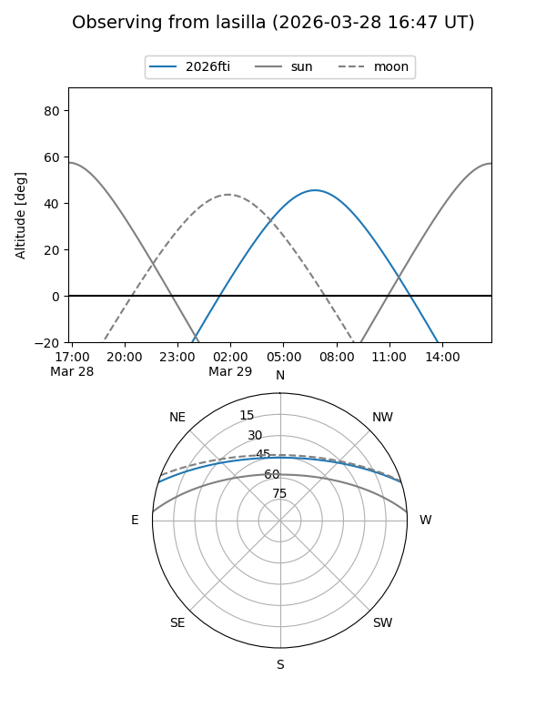
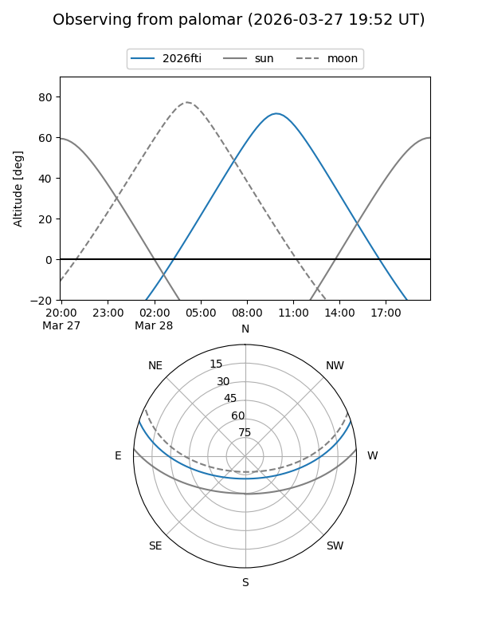
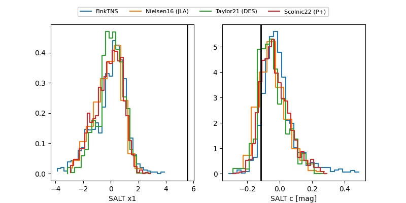

2026fti
Target 2026fti at 2026-03-28 11:58
Aliases and brokers:
FINK: link
Lasair: link
ALeRCE: link
TNS: link
YSE: link
alt names
ZTF26aakrrjj (ztf,fink_ztf)
2026fti (tns,yse)
Coordinates:
equatorial (ra, dec) = 217.4974,+15.27292
equatorial (HMS+DMS) = 14:29:59.39,+15:16:22.52
galactic (l, b) = (10.5762,+64.22474)
Flags:
Photometry:
last ztfg=20.00, ztfr=19.99
5 ztfg, 2 ztfr detections
Lightcurve

Visibility


Additional plots
